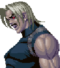

G・ルガール全モード・技表
矢印は、MOMORUさんから頂いた物を使わせていただきました。
全モード・共通動作
| 技名 | コマンド | 備考 | 大ジャンプ | 下要素入れて直ぐに離し、上要素押しっぱなし | もしくはダッシュ中に上要素押しっぱなし 中ジャンプ | 下要素入れて直ぐに離し、上要素入れて直ぐに離す | もしくはダッシュ中に上要素入れて直ぐに離す 小ジャンプ | 下要素要れずに、上要素入れて直ぐに離す | ・ダブルトマホーク | +a | ・スコーピオンデスロック | 接近して横要素+y | ・スコーピオンブロウ | 接近して横要素+b | ・ふっとばし(空中可) | y+b or z | ・ダウン回避 | ダウン直前にx+a or c | 投げに対してのみ無敵 | ・避け | x+a or c | 投げくらい判定のみ有り | ・避け攻撃 | 避け中に攻撃ボタン | ・避け移動 | or+ x+a or c | 投げくらい判定のみ有り | ・パワー溜め | z+c後、z or c押しっぱなし | ・任意MAX超必殺 | (要Power=3000)コマンド＋All_P or All_K同時押し | |
| ・モードセレクト | mode select |
| ・ノーマル・ルガール(Normal Mode) | x or a |
| ・Ω・ルガール(Omega Mode) | y or b |
| ・God・ルガール(God Mode) | z or c |
| 技名 | コマンド | 備考 |
| 必殺技 | ||
| 烈風拳 | x or y | しゃがみ飛び道具属性 |
| ダーク・バリアー | a or b | 一発だけ飛び道具を打ち返す |
| ジェノサイド・カッター | a or b | 出る瞬間無敵 |
| ゴッドプレス | x or y | 打撃投げ |
| カイザーウェイブ | x or y | 溜め可能 |
| 超必殺技 | ||
| デッドエンド・スクリーマー | a or b | 地上の相手のみHit。 ガード不能 |
| ジェノサイド・ヘヴン | a or b | 一定距離にいる相手をHit時に吸い込む |
| ギガンティック・プレッシャー | x or y | 打撃投げ |
|
オメガ・ルガール(Ω・Rugal)技表 
|
|
God・ルガール(God・Rugal)技表
|